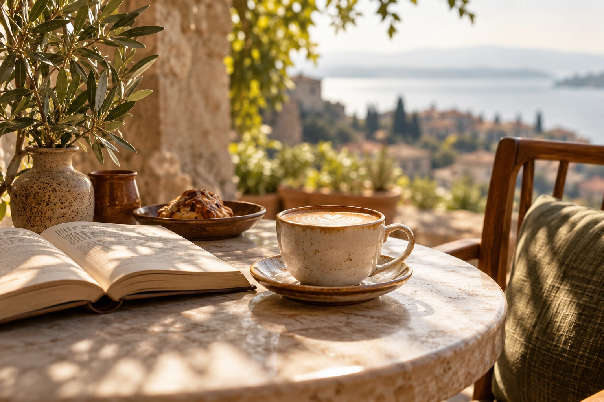
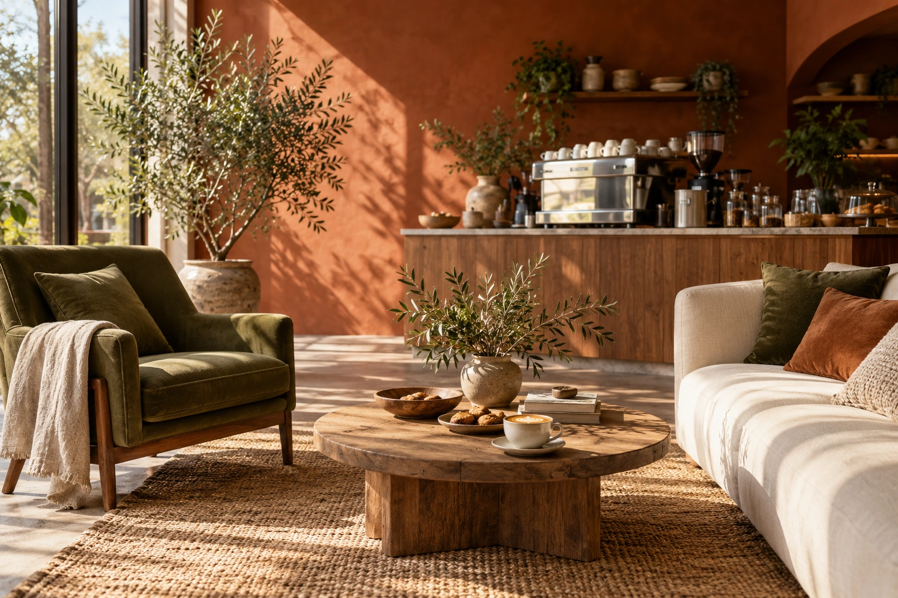
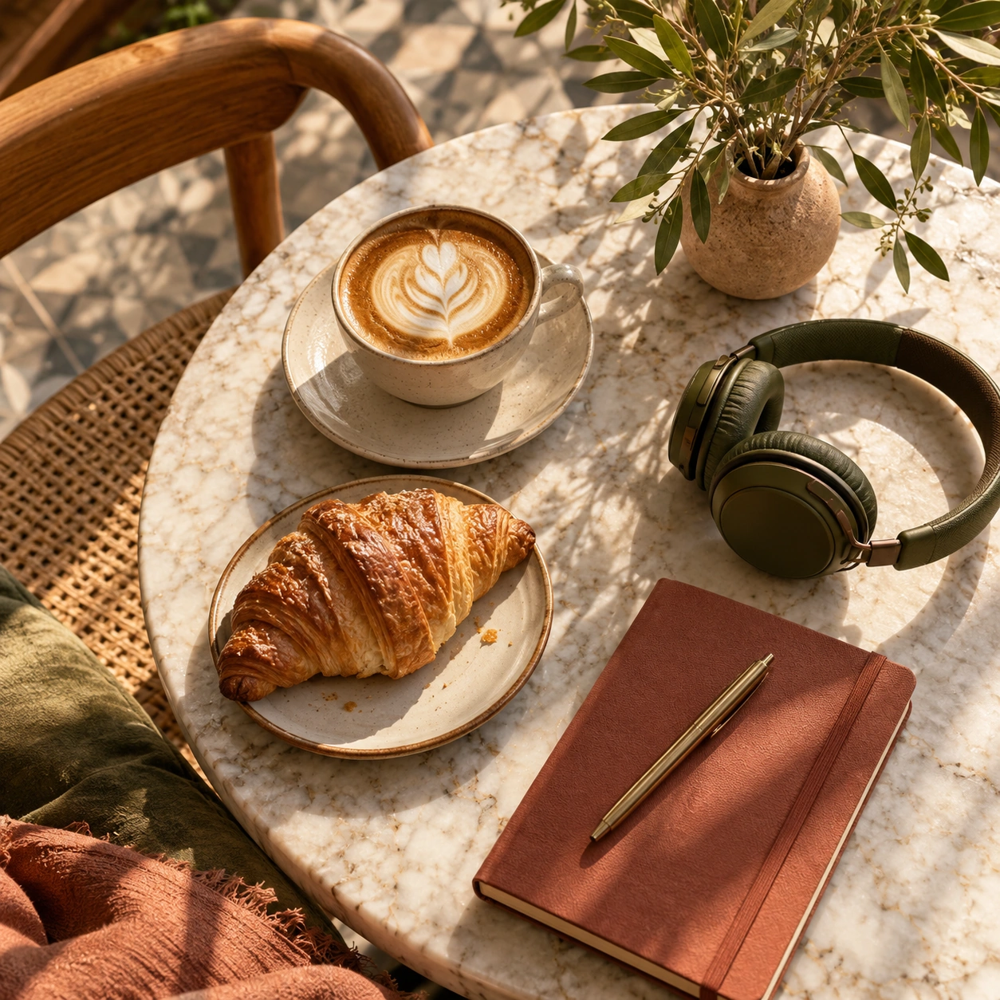
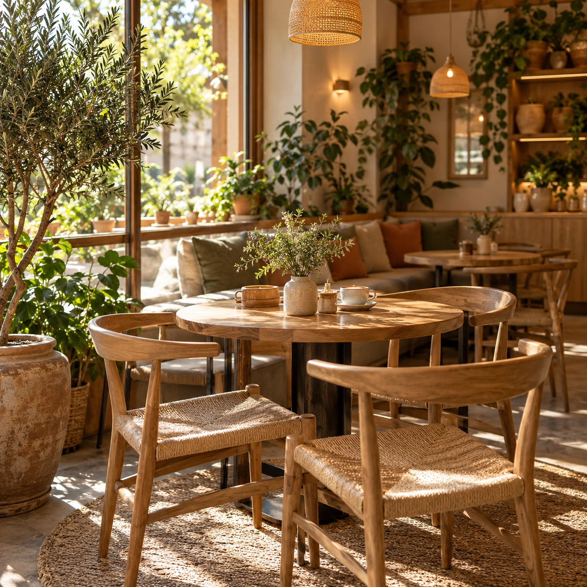

Культура · MOKO NOTES
Маленькие кофейные ритуалы, большие чувства
Как превратить обычную чашку кофе в приятную паузу среди дел.
Читать историю ↗Кофе — только повод. Здесь говорим о дизайне, маленьких ритуалах и вдохновении.

Как превратить обычную чашку кофе в приятную паузу среди дел.
Читать историю ↗
О палитре, настроении и о том, как визуальный язык создаёт атмосферу.
Читать историю ↗
Плейлист, свет из окна и кофе — маленькие детали, которые всё меняют.
Читать историю ↗Каждый бренд начинается с идеи. В MOKO мы собираем идеи в красивую коллекцию моментов.

Никаких заказов и суеты — просто красивый мир, в который хочется заглянуть.
Найди свой напиток ↗